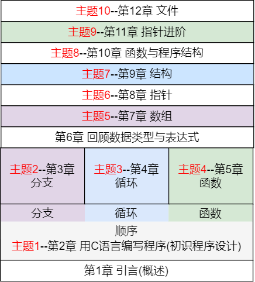

课程介绍(1)
程序设计基础，即C语言程序设计
面向计算机科学与技术/医学信息工程一年级学生
是最重要的一门专业基础必修课
课程介绍(2)
学分 3+1.5，周课时3+3，总课时48(理论)+48(实验)
上课时间 -- 认真看课表
课程目标
- 了解高级程序设计语言的结构
- 理解计算思维的思想和方法
- 掌握基本程序设计的过程和技巧
- 具备基本的分析问题和利用计算机求解问题的能力
计算机求解问题(1)
计算机求解问题的一般步骤:
- 分析问题
- 建立数学模型
- 选择、设计算法
- 编程实现
- 结果分析
练习的四个层次
练习的一般要求
- 范例任务 -- 重复上课内容
- 补全任务 -- 关键代码填空
- 逆向任务 -- 给出完成后的样子，分析实现
- 独立任务 -- 独立完成代码
对应的编程特点
- 能看懂和调试别人的代码
- 能在别人的代码基础上进行适当改写
- 能把多段已有的代码组合起来实现需要的功能
- 自己动手编写代码实现特定功能需求
学习要求
- 掌握程序设计语言的基本知识
- 掌握常用算法
- 具备初步程序设计能力
编程能力培养
- 阅读、探究式学习
- 分析、综合、表达
- 教材/课件/程序
- 上机编程，第一天开始，持之以恒，贯穿始终
学习方法
- 预习，教材、MOOC、练习
- 课堂，讲授、讨论、练习、演讲
- 复习，教材、参考资料、MOOC、讨论、练习
如何尽快学会用C语言进行程序设计
- 快速入门，了解程序设计语言，认识C语言
- 循序渐进，模仿、改写、编写的缟程实践
- 逐步深入，领会和掌握程序设计的基本思想与方法
学习内容组织
以程序设计贯穿各主题，快速入门、循序渐进、逐步深入

课程考核(1)
《程序设计基础》
总评成绩=期末卷面成绩*50%+5次阶段测试*40%+平时成绩*10%
平时成绩，包括课堂签到、问答、交流等
《程序设计基础实验与课程设计》
总评成绩=上机考成绩*50%+OJ刷题情况*40%++自选大作业*5%+《程序设计入门-C语言》(浙江大学--翁恺)MOOC加分*5%